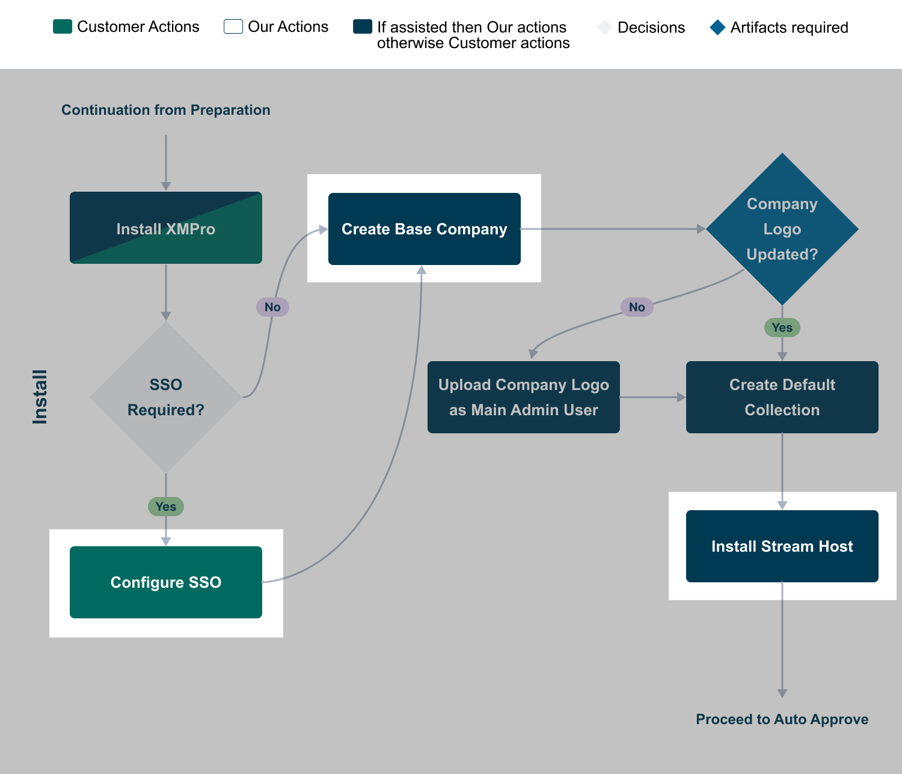
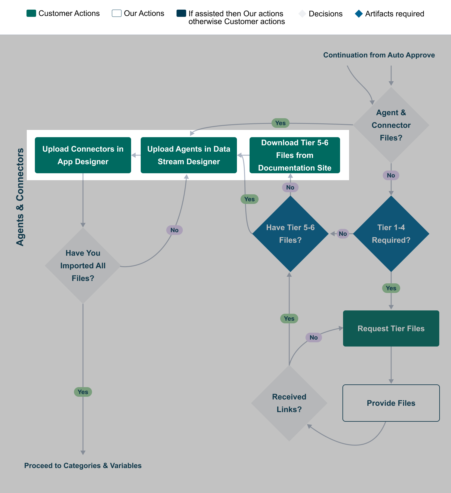

Complete Installation
After deploying the XMPro Platform, several additional steps are required to complete the installation and optimize your environment. This section covers the post-deployment configuration and setup tasks.

Fig 1: The context of the complete installation steps within the overall process.
Configuration Options
The following configuration options are available to enhance your XMPro installation:
- Configure Auto Scale (Optional) - Set up auto-scaling for your deployment
- Configure Health Checks (Optional) - Implement health monitoring for your XMPro services
- Configure Logging (Optional) - Set up comprehensive logging for troubleshooting and monitoring
- Configure SSO (Optional) - Implement Single Sign-On with ADFS or Azure AD
- Set Up a Tenant Company - Create and configure your first tenant company
- Install Stream Host - Set up the Stream Host for data stream processing
Installing Connectors and Agents
A critical part of the installation process is setting up the connectors and agents that enable XMPro to integrate with various data sources and systems.

Fig 2: The context of the Agents & Connectors step within the overall process.
- Install Connectors - Install and configure the necessary connectors for your environment
Follow the guides in this section to complete your XMPro installation and prepare your environment for use.
Last modified: May 29, 2025